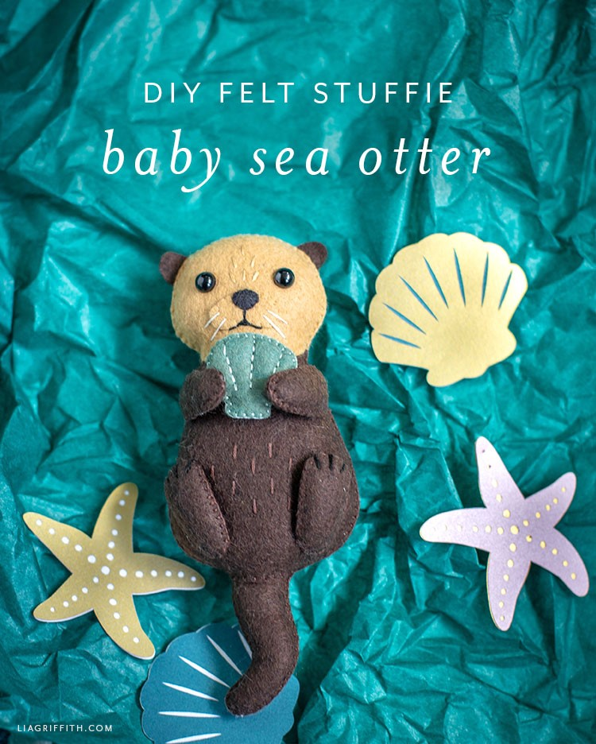

Felt otter stuffie branch
Our designer Krista is back at it again with the adorable felt animals. A couple of months ago, she designed this beautiful swan. And today she has crafted another aquatic animal—a felt sea otter stuffie! This is our first otter project on the site, so you’ll have to tell us what you think. You can also let us know if you have any requests for a new felt animal stuffie! Since this cute little guy spends most of his time in the sea, we gave him a small felt seashell to hold. We also cut out some paper seashells and starfish for fun. You can find the pattern for those paper cutouts in this post. Or you can cut some out of felt, instead, like we did for our mermaid headband.
Otterly Amazing!
For our felt sea otter stuffie, we used a wool blend felt by Benzie in brown, toast, and black. And for the shell, we used blue spruce. You can use the same colors or choose the ones you like best. If you do go with the blue spruce felt, we have other project ideas you can use it for, like our felt eucalyptus! Or you can use it to craft other fun accessories for your felt animals. If you want to create a whole zoo of animals in addition to your felt sea otter stuffie, we have lots of other ideas on the site for you too. You can craft our cute polar bear, our felt brown bear, our felt zebra, and our felt lion and lioness. We also have some handsewn felt giraffes you can make! Craft them for your own collection, or gift them to someone. They’re great for imaginative play, so if you know any little ones who would love a felt sea otter stuffie, this project would be perfect!Tools
- Cricut Maker (optional)
- Low-Temp Hot Glue Gun
- Craft Scissors
- Detail Scissors (recommended)
- Embroidery Needle
- Straight Pins
- Wooden Skewer or Chopstick
Materials
- Lia Griffith’s Wool Blend Felt – Bark Brown, Camel, Black and Spruce
- Embroidery Floss — DMC Ultra Dark Coffee Brown (938), Blue Green (502), Black (310), Off White (746) and Light Tan (437)
- Poly-Fil
- Safety Eyes x2 — 8mm

Link to the author's page